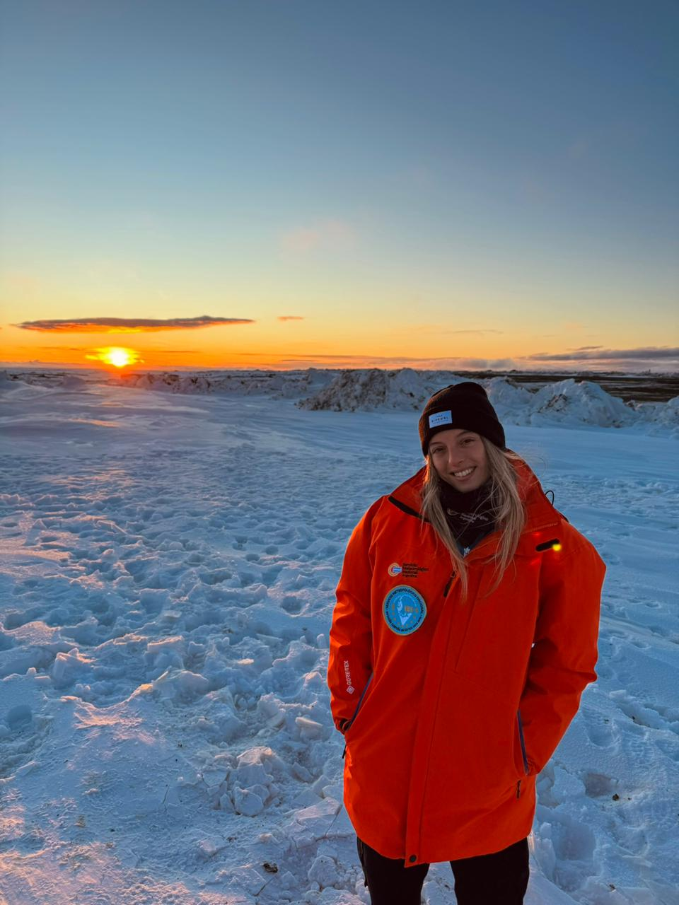
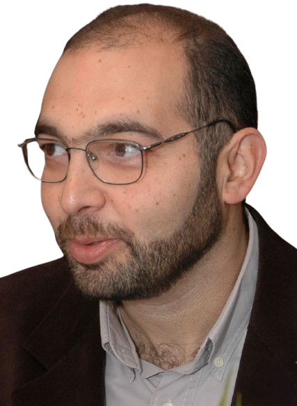
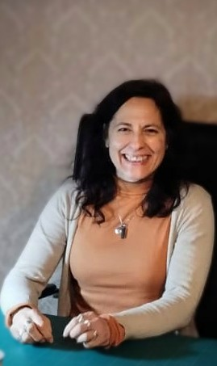
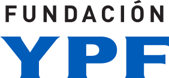
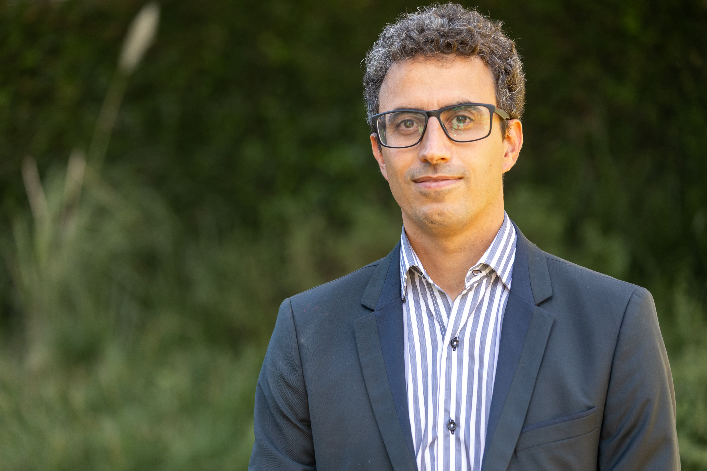
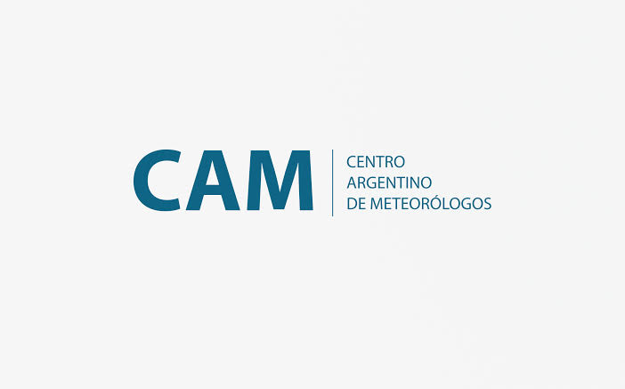
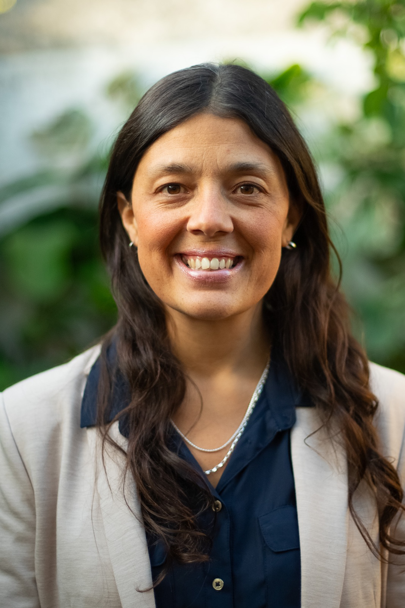
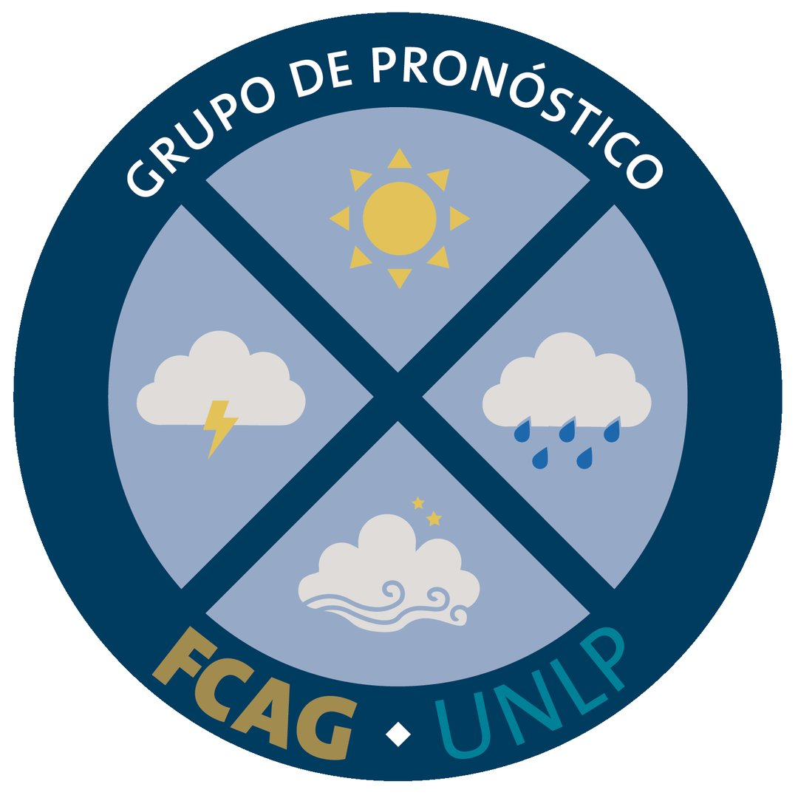
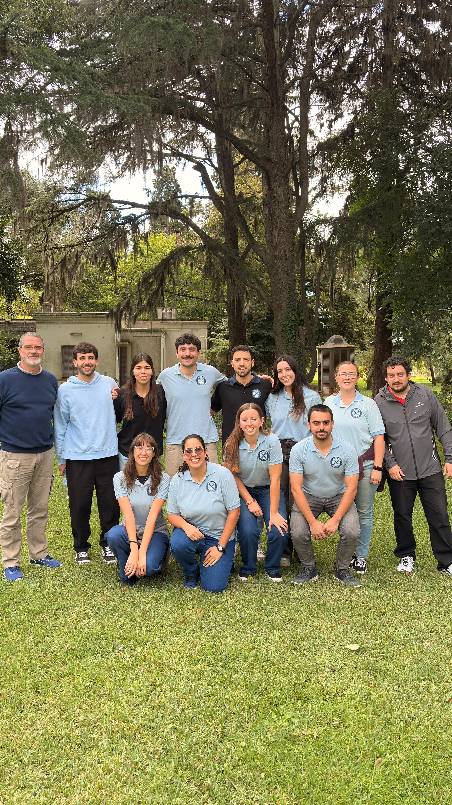

Astronomía
Florencia Vieyro
IAR · CONICET–CIC–UNLP
Agujeros negros: laboratorios de altas energías
Conocer trayectoria →
Conocé a quienes van a compartir sus investigaciones, experiencias y recorridos profesionales durante las tres jornadas de CIGMA.
Explorá los perfiles de nuestros expositores y conocé un poco más sobre sus trayectorias, áreas de trabajo y las charlas que van a compartir en CIGMA 2026.
IAR · CONICET–CIC–UNLP
Agujeros negros: laboratorios de altas energías

Institución a completar
Divulgación de la astronomía

FCAG–UNLP · GEMAE
Tras los secretos de las estrellas más luminosas

IAR · CONICET · UNLP
El universo antes de la expansión: modelos cosmológicos con rebote

FCAG–UNLP · UNSAM · ITBA
Todo está en la luz: cómo caracterizamos exoplanetas sin verlos

IAR · CONICET · FCAG–UNLP
El Universo de rayos X

IAR · CONICET · FCAG–UNLP
Vibraciones del espacio-tiempo: astronomía, geofísica y meteorología en la investigación de ondas gravitacionales

IAR · CONICET · CIC · UNLP
Pulsares en el tiempo: dos décadas de ciencia e ingeniería en el IAR

Universidad Nacional de La Plata · UNLP
Identificación de rasgos geomorfológicos con ERT

OAVV–SEGEMAR · FCAG–UNLP
Aprender el idioma de los volcanes
Escuchar sus señales para comprender su dinámica y anticipar sus cambios

Institución a completar
IA en la interpretación sísmica

Pan American Energy
Del Caribe a Alaska y Patagonia
Navegar incertidumbres y construir una carrera como geofísica en un mundo cambiante

Institución a completar
Proyecto sismológico en la Patagonia Argentina

CIGEOF · CONICET · UNLP
Geocientíficos sin Fronteras: la Geofísica más allá de la industria y la investigación

CONICET · FCAG–UNLP
Respuesta de la tierra y del mar al retroceso de los glaciares en la Patagonia

YPF · UBA · UNAB
Mi diario de supervivencia profesional

Servicio Meteorológico Nacional
Título a confirmar

SMN · FCAG–UNLP
Mayday Mayday ceniza por los aires

Institución a completar
Cambio Climático

Institución a completar
GPS y vapor de agua

Institución a completar
Sistema de alerta temprana

Institución a completar
Actividad eléctrica

Institución a completar
IA y sus aplicaciones en la meteorología
Conocé distintos institutos, observatorios, centros y grupos de investigación de la mano de quienes forman parte de ellos.

Mauricio Gende

Amalia Meza


Gustavo Gallo


Carla Gulizia
Santiago Perdomo

Gustavo Romero

Carolina Renaud


Grupo de Pronóstico · FCAG–UNLP
Representante a confirmar
Representante a confirmar
Representante a confirmar
Representante a confirmar
Representante a confirmar

Danilo Velis

Josefina Blasquez
Consultá el cronograma completo y encontrá el día y horario de cada exposición.
VER CRONOGRAMA →